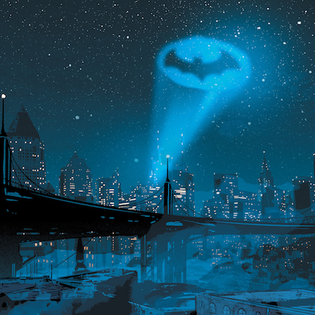

En un momento de decisión crítica, Batman optó por la acción directa. Calculando rápidamente la trayectoria y el momento adecuado, lanzó un batarang especializado hacia Dos Caras, esperando incapacitarlo sin causar daño al rehén.
Sin embargo, en un giro inesperado del destino, Dos Caras, impulsado por su instinto de supervivencia y años de enfrentamientos con Batman, reaccionó con una velocidad sorprendente. Movió al rehén justo en la trayectoria del batarang mientras sacaba su arma y disparaba en dirección a Batman.
El batarang falló su objetivo original y, en un desafortunado desenlace, Dos Caras también. La bala, destinada a Batman, encontró su marca, hiriéndolo gravemente. En los momentos finales, Batman cayó, su visión se oscureció mientras los sonidos de la batalla se desvanecían en la distancia.
Gotham perdió a su guardián esa noche. La ciudad se sumió en un luto profundo, enfrentando la dura realidad de un mundo sin Batman. El sacrificio del Caballero Oscuro se convirtió en leyenda, un recordatorio eterno del precio de la justicia y la seguridad en una ciudad consumida por la oscuridad.
El final de Batman marcó el comienzo de una nueva era para Gotham, una llena de incertidumbre pero también de esperanza. La esperanza de que nuevos héroes surgirían, inspirados por el legado y el sacrificio del más grande de ellos.
|
 |